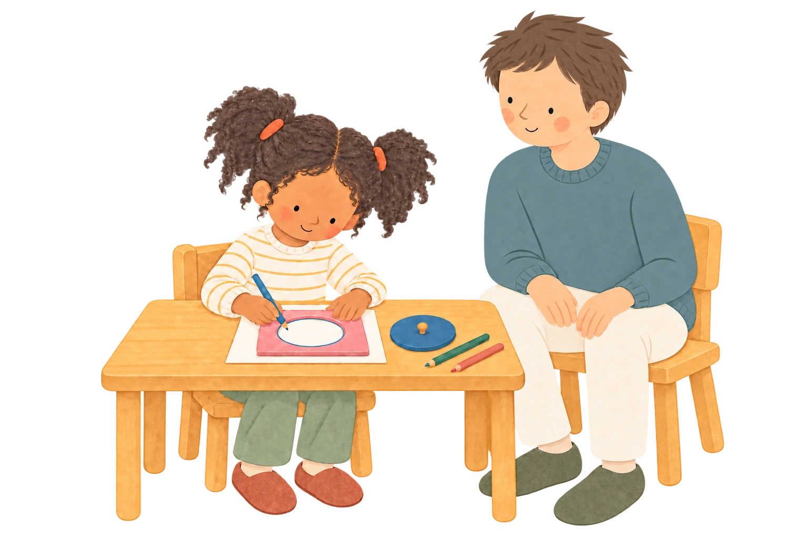

Avec soi-même
Reconnaître ses besoins, exprimer ce que l’on ressent et prendre confiance dans ses capacités.
Se construire, trouver sa place
et apprendre à vivre ensemble.
Développée par Maria Montessori à partir de l’observation des enfants, cette pédagogie accompagne leur envie d’agir, de découvrir et de comprendre. Elle relie les apprentissages à une ambition plus large : grandir en confiance, en autonomie et en responsabilité.
Au cœur de notre pédagogie : l’éducation à la paixApprendre à se connaître,
à respecter l’autre
et à prendre soin du monde.
L’éducation à la paix traverse toute la pédagogie Montessori. Elle se vit dans la manière d’accueillir un enfant, de l’écouter, de poser des limites et de lui permettre d’agir au sein d’un groupe.
Aux Petons, nous souhaitons que chacun trouve sa place, avec son histoire, sa langue, son rythme et ses particularités. Le respect de chaque individualité nourrit la vie commune.
Reconnaître ses besoins, exprimer ce que l’on ressent et prendre confiance dans ses capacités.
Écouter, demander de l’aide, exprimer un désaccord et chercher une solution avec l’appui de l’adulte.
Prendre soin d’un lieu, d’une plante, du matériel partagé et découvrir les liens qui nous unissent au monde.
L’ambiance est un environnement préparé, ordonné et stimulant. Le mobilier et les objets sont adaptés à la taille et à la force de l’enfant. Les activités répondent à ses besoins et, chez les plus jeunes, à ses périodes sensibles : ces moments où un apprentissage l’attire particulièrement.
Chaque activité est accessible et retrouve sa place après utilisation. La beauté et le soin des objets invitent à s’en saisir. Conçu à partir de l’observation, le matériel sensoriel isole une difficulté ou un concept : comparer des dimensions, associer un son à une lettre, sentir une quantité… Les mains préparent le chemin vers l’abstraction.
Apprendre par l’expérience, c’est manipuler, essayer et construire sa propre compréhension. L’activité individuelle permet à chacun de faire ce chemin personnel, aux côtés des expériences vécues en petit groupe.

Formé à la pédagogie Montessori, l’éducateur observe l’enfant, présente le matériel avec précision et accompagne son développement personnel. Il propose une aide ajustée, puis laisse l’espace d’essayer et de progresser.
Garant de l’ambiance, il veille à l’ordre, au matériel complet et disponible, à la sécurité, aux relations et au respect de la concentration.
La liberté se construit dans un environnement préparé, avec des limites comprises et partagées. L’enfant apprend à choisir et à agir en tenant compte de lui-même, des autres et du matériel.
Quatre libertés
pour devenir acteur.
Choisir parmi les activités présentées, disponibles et adaptées à sa progression, avec l’appui de l’éducateur.
Pouvoir répéter et approfondir tant que l’intérêt est présent, dans le cadre des temps de classe.
Échanger, poser une question, partager une découverte, en respectant l’écoute et la concentration des autres.
Se déplacer, installer son activité, travailler à une table ou sur un tapis, avec des gestes attentifs au lieu et aux autres.
Choisir, s’engager, persévérer, ajuster ses gestes : l’enfant exerce sa volonté. Peu à peu, il apprend à se guider lui-même et à respecter le cadre commun. L’autodiscipline se construit de l’intérieur.
Cette autodiscipline nourrit une liberté intérieure : l’enfant se sent capable d’agir et de reconnaître ses propres progrès. Dans la pensée Montessori, elle contribue à l’équilibre, à la joie d’apprendre et au bonheur de grandir.
L’adulte cherche à favoriser cette dynamique et à protéger les moments où l’enfant est absorbé par son activité. De longues plages de travail lui permettent de reprendre, répéter et aller au bout de son expérience.
Certains enfants ont besoin de répéter longtemps ; d’autres sont prêts à poursuivre leur exploration. Ce rythme peut varier selon les jours et les activités. L’éducateur observe, soutient la progression et évite de comparer les vitesses d’apprentissage.
En grandissant, l’enfant transforme sa manière d’apprendre. La pédagogie Montessori accompagne cette évolution : l’exploration sensorielle ouvre progressivement la voie au raisonnement, à l’imagination et à la recherche de liens.
L’enfant se construit au contact de ce qui l’entoure. Il observe, touche, bouge, écoute et répète. Ces expériences nourrissent son langage, affinent ses perceptions et l’aident à ordonner sa pensée.
Des activités précises, accessibles et progressives lui permettent de développer son autonomie et sa concentration.
Découvrir l’ambiance 3–6 ansL’enfant veut comprendre pourquoi et comment. Il raisonne, imagine ce qu’il ne peut observer directement, confronte des idées et s’interroge sur ce qui est juste.
L’éducation cosmique lui propose une vision d’ensemble, puis l’invite à explorer les détails. Les grands récits ouvrent des recherches et des échanges : l’enfant relie les savoirs, découvre les interdépendances du monde et s’interroge sur la place de l’être humain.
Découvrir l’ambiance 6–12 ansCette évolution est progressive. Le matériel et l’expérience concrète restent essentiels après 6 ans, au service d’une pensée qui élargit peu à peu son horizon.
Les classes multi-âges offrent différentes façons d’apprendre les uns des autres. Les plus jeunes observent et osent ; les plus grands peuvent partager une découverte et consolider leur compréhension en l’expliquant.
Chaque enfant rencontre des camarades dont le rythme, les intérêts et les savoir-faire diffèrent des siens. La coopération se construit dans cette diversité.
Saluer, demander, attendre, remercier : les gestes de « grâce et courtoisie » aident à vivre ensemble.
Écouter une autre idée, se répartir les tâches et s’engager dans une recherche commune.
Ranger, préparer, entretenir un espace partagé : chacun contribue à la vie du groupe.
L’éducation à la paix prend forme dans ces gestes du quotidien.
Des investissements importants dans le mobilier et le matériel Montessori, et un jardin qui prolonge les expériences.
Découvrir l’écoleDes parcours de formation complémentaires et une équipe qui croise ses regards pour accompagner chaque enfant.
Découvrir l’équipePréparer une collation, faire du pain, nettoyer et ranger : des occasions réelles d’agir et de prendre soin du collectif.
Consulter les informations pratiquesDécouvrez les ambiances, le matériel et la manière
dont l’équipe accompagne les enfants.